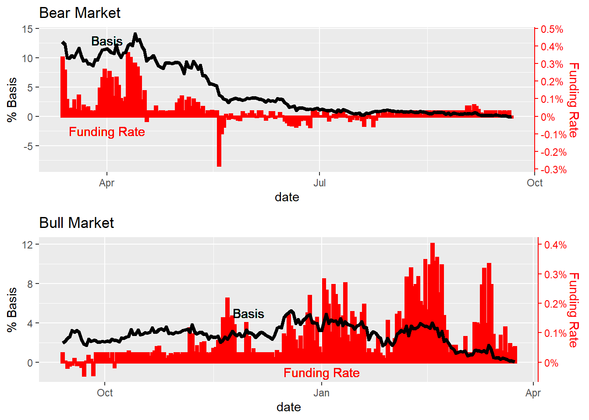
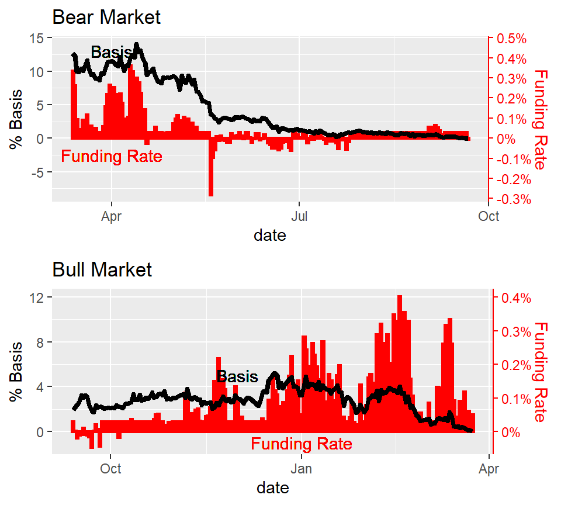

Chapter 5 Results
5.1 How does the market emotion affect the Funding Rate?
Funding rates are periodic payments between traders to make the perpetual futures contract price is close to the index price. It is a result of market behaviors and could be used to maker some interpretation in the derivative market which also is a dominant price maker in the market. In the bull market, it have a tendency to naturally bring high funding rates with price rise.
fear-and-greed index was produced analyzing the current sentiment of the Bitcoin market and crunch the numbers into a simple meter from 0 to 100. Zero means “Extreme Fear”, while 100 means “Extreme Greed”.
 In the figure, the x-axis is the value of fear index, the y-axis is the average funding rate group by fear index. There are more than 480 samples in data set. R-square is more 7.7 and the figure shows the strong linear relationship between fear index and funding rate. Thus, we can tell the strong positive correlation between fear index and funding rate. The greedy the market is, the higher funding rate would be.
5.2 How does the changes in market affect basis?
The basis is the decisive factor in our trading strategy. We would like to analyse the current basis from three different aspects: market emotion, calibrated basis, market volatility.
Market Emotion: we use fear & greed index and funding rate to represent the market emotion. Fear index are designed to quantify the market emotion, and the funding rate is also a indicator to describe traders’ sentiments, especially in derivative market.
Calibrated basis: calibrated basis is calculate by basis / days remaining * 365. It is named “annual basis”. Annual basis eliminates the impact from expiration date and can be used to compare current basis with history basis.
Volatility: volatility is the degree of variation of a trading price series over time. We assume when the volatility is extreme high, many position in crypto market would be liquidated which would lead to extreme basis.
5.2.1 Funding Rate
We would look at how the changes affect basis in bear markets. We use the history data of “BTC contract 210924” as bear market condition and “BTC contract 210924” as  Based on two figures, the relationship between funding rate and basis can be easy observed. The higher funding rate seems accompanied with high basis. Also, as mentioned in the introduction, the value of basis is highly related to the remaining days of the contract. Thus, even though the funding fee extreme high at the tail of contract, the basis would still gradually converge to zero.
However, the kind information is not that useful for trading. We also plot the basis vs the accumulation of funding rate. The accumulation of funding rate is calculated as the sum of funding rate from today until the expiration date.
 In bull market, the accumulation of funding rate never lower than basis. However, in bear market, the accumulation of funding rate would lower than basis, especially when the price drop suddenly.
In bull market, the accumulation of funding rate never lower than basis. However, in bear market, the accumulation of funding rate would lower than basis, especially when the price drop suddenly.
Thus, we can conclude the first rule in our trading strategy. Don’t short the basis in bull market or long the basis in bear market.
However, how can we quantify the current market is bull or bear? Fear index!
5.2.2 Fear and Greed index
Based on two figures, the relationship between funding rate and basis can be easy observed. The higher funding rate seems accompanied with high basis. Also, as mentioned in the introduction, the value of basis is highly related to the remaining days of the contract. Thus, even though the funding fee extreme high at the tail of contract, the basis would still gradually converge to zero.
However, the kind information is not that useful for trading. We also plot the basis vs the accumulation of funding rate. The accumulation of funding rate is calculated as the sum of funding rate from today until the expiration date.

However, the correlation between fear index and basis is not that obvious due to the expiration date of contract. As mentioned in the introduction, the value of basis is highly related to the remaining days of the contract.
From the Figures, we can tell that the sudden drop of the fear index would not be a
5.2.3 Consecutive extreme market days vs funding rate
####Consecutive Fear days vs funding rate Not so obvious, but still can see longer days, lower funding rate
5.2.4 Consecutive greed days vs funding rate
Not so obvious, but still can see longer days, larger funding rate
5.3 Basis
The main idea of our trading strategy is to predict is the basis is on bottom or top. We explore basis from three different aspects: fear index, annual Basis and Volatility.
5.3.1 Fear index vs Basis
## Model:
5.3.2 Run Model
Base on our model, we can tell you the right point to open the position (without info leaking)